Microarray R-based Analysis of Complex Lysate Experiments with MIRACLE
Release Notes:
{% capture my_include %}{% include release_notes.md %}{% endcapture %} {{ my_include | markdownify }}Motivation:
Reverse phase protein arrays (RPPAs) allow sensitive quantification of relative protein abundance in thousands of samples in parallel. Typical challenges involved in this technology are antibody selection, sample preparation and optimization of staining conditions. The issue of combining effective sample management and data analysis, however, has been widely neglected.Results:
This motivated us to develop MIRACLE, a comprehensive and user-friendly web application bridging the gap between spotting and array analysis by conveniently keeping track of sample information. Data processing includes correction of staining bias, estimation of protein concentration from response curves, normalization for total protein amount per sample and statistical evaluation. Established analysis methods have been integrated with MIRACLE, offering experimental scientists an end-to-end solution for sample management and for carrying out data analysis. In addition, experienced users have the possibility to export data to R for more complex analyses. MIRACLE thus has the potential to further spread utilization of RPPAs as an emerging technology for high-throughput protein analysis.User guide (Tutorial)
A thorough introduction to the features of “Microarray R-based Analysis of Complex Lysate Experiments”
Note: All screenshots were created by MLP and IB. The MIRACLE logo was created by ML.
Table of Contents
2.1. Creating Experimental Properties
3.1. Block Shifts and Export of Data.
3.3. Uploading files to Rmiracle
1. Getting Started
1.1. Login
Go to http://www.nanocan.org/miracle/demo (31/03/2014) and login with username “demo” and the password “demo0815”.
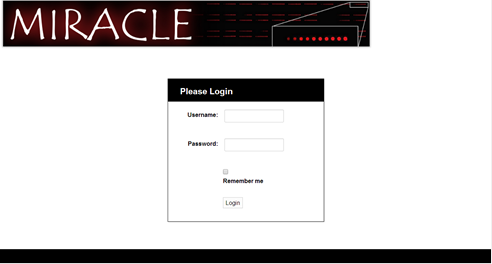
Welcome to MIRACLE!
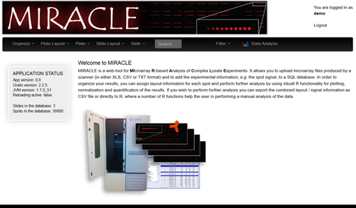
1.2. Organizing the Work
Start by organizing future results and data by creating projects with corresponding experiments. Use the drop-down menu, Organize > Create New Project, click “Create” (red circle) in the bottom left corner to save your changes.
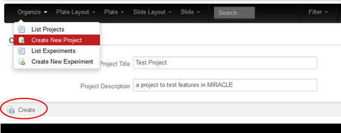
Within each project, several experiments can be listed. Use the drop-down menu Organize > Create New Experiment, fill in experimental information and select a project subfolder from the “Project” drop-down menu; click “Create” in the bottom left corner to save your changes as shown above.
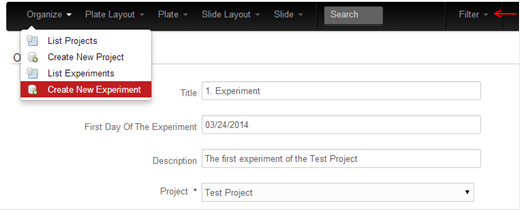
Creation of projects and experiments will be important later for sorting and comparison of data. The “Filter” (red arrow) allows the user to display only those projects or experiments important for a particular analysis.
2. Plate and Slide Layouts
2.1. Creating Experimental Properties
Before entering actual experimental plates, please enter properties such as cell lines, dilution factors, and inducers etc., used in your experiments, which may vary from sample to sample.
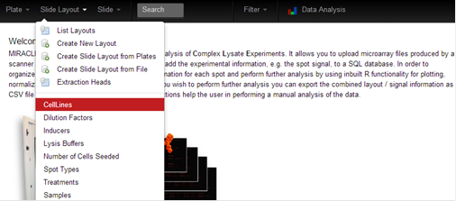
As a first example, select Slide Layout > CellLines. All annotated cell lines used in prior experiments will be displayed. Select “New Cell line” (red circle) in the top right corner to annotate further cell lines.
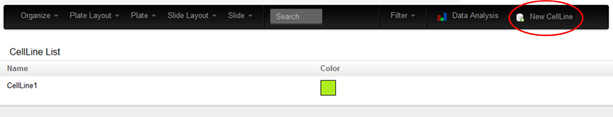
Give the cell line a name and select a colour for displaying the property. Click “Create” in the bottom left corner.
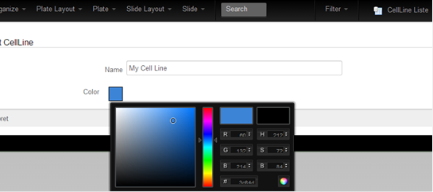
As a second example select Slide Layout > Samples. Select “New Sample” (red circle) to annotate samples.
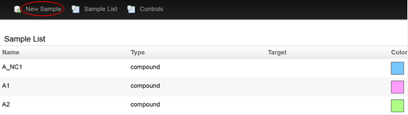
Specify the sample name, the type of sample and if the sample has a known target. It is also possible to select if the sample is a control and whether it is a positive or negative control. Click “Create” in the bottom left corner.
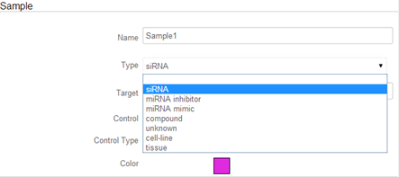
Prepare all the properties needed for your experiment; Cell lines, dilution factors, inducers, lysis buffer, number of cells seeded, spot types, treatments, samples.
2.2. Plate Layouts
Now the layouts of the experimental plates can be created. Select Plate Layout > Create New Layout. Enter the name of the plate, the format and which experiment the plate belongs to. Click “Create” in the bottom left corner.
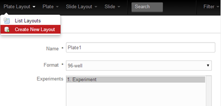
Next, please use the drop-down property menu to select and assign the different properties of your plate, which were created in section 2.1 (red arrow). First, select the property (e.g. sample) in the legend on the left. Afterwards locate a sample that should have this property on the right, where wells of a plate are shown schematically. The colour code will reflect the loading of your plate. Make sure to save your work (red circle) every time a new property is entered to the layout. If needed, it is possible to create copies of plate layouts in case only few properties change from experiment to experiment, such as number of cells seeded or cell line. Give the copy a proper name and press “Create Copy of this layout” (Blue arrow). Now change the property, which is different between the original and the copy layout and save your changes (red circle) in the layout. NB: It should be emphasized that you will now be working on the copy unless switched back to the original plate!
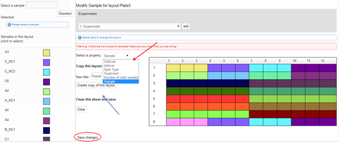
You can list all created layouts by experimental plate(s) clicking Plate Layout > List Layouts.
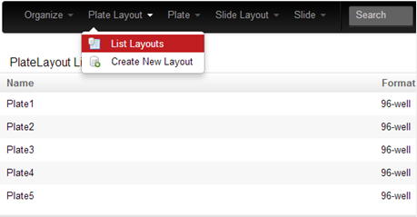
2.3. Plate Readouts
Next, the plate layouts must be linked to actual plates, possibly containing different primary readouts. First, create the type of plate that was used. Plate > Plate Types, select New Plate Type in the top right corner. Enter the well shape, name of the plate and optionally, the vendor.
Next select Plate > Create New Plate and enter details of the plate such as barcode, name, plate type, format etc. Tick the box to select whether this is a plate carrying samples or a so-called “Control Plate”. The plate must/should further be assigned to an already created experiment in section 1.2 (drop-down menu, red circle) and a plate layout, as created in section 2.2 (drop-down menu, blue circle).
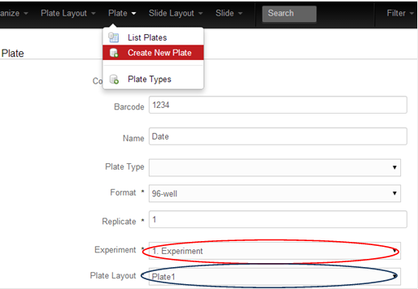
Afterwards, different readouts can be selected and assigned to this plate. Click the pane “Readouts” and the “Add readout”. Here it is possible to specify the data and type of readout along with which plate this readout belongs to. Furthermore, it is possible to upload a result file in .xlsx or tab separated .txt format along with an image and an experimental protocol. Click “Create” in the lower left corner. Note that the ancient binary Excel format .xls is not supported.
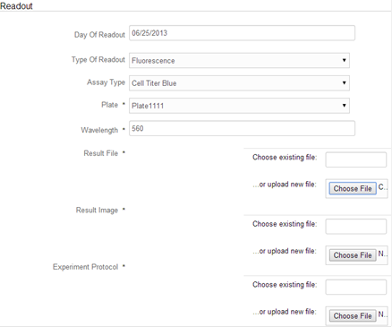
Next, the readout data should be linked to the information of the plate layout. Subsequently, you need to select the individual columns of your file corresponding to one of row, column, wellPosition or measuredValue. To specify the position of the well you need to select either row and column, or wellPosition (e.g. in the format of “A01” etc.). The measuredValue corresponds to the signal obtained during the readout. In addition, you may specify how many lines (if any) should be skipped from the readout document. Furthermore select the type of document (CSV or custom), the column separator and numerical separator(s). Press “Read the selected sheet” (red arrow). Match all columns needed to the columns of the result file using the drop-down menu. Next, press “Add readout data” (blue arrow).
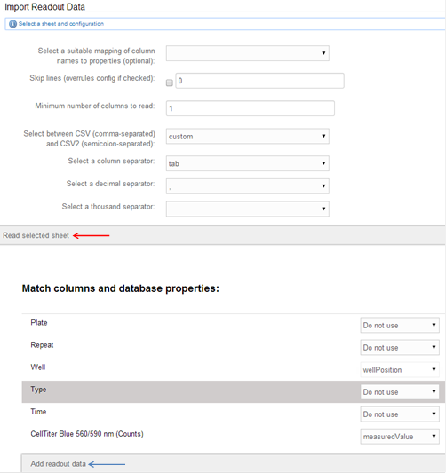
Subsequently, the readout data is displayed in a heatmap for visual inspection.
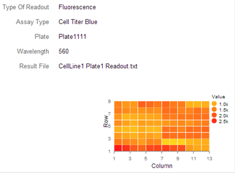
When finished, the plates can be listed via the Plate> List Plates function.
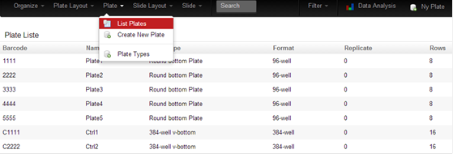
2.4. Slide Layouts
Now, a slide layout can be created. This can be achieved in several ways. Slide Layout > A, B, C.
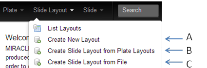
A – “Create New Layout”: No plate layouts are used. The user creates an empty layout meaning that all sample information must be assigned manually as illustrated previously for plate layouts.
B – “Create Slide Layout from Plate Layouts”: The user creates a slide layout through a “virtual spotting” by combining different source plates to a desired layout according to the applied spotting settings in an automated fashion.
C – “Create Slide Layout from File”: In this case the user creates the layout by uploading a file containing the sample information per spot position on a slide, for example, an excel file in MIRACLE compliant format (see Supplemental File 1).
In the following, the most complex application, namely the creation of a slide layout from a plate layout will be described.
Prior to creating a slide layout from a Plate Layout (B) it is important to specify the details of the spotter/array/printer extraction head used for the construction of the array. Select Slide Layout > Extraction Heads, Click “New ExtractionHead” in the top right corner. Give the extractor a name, and specify the rows and columns of the pins/pipets/nozzles of the print head. Press “Create” in the lower left corner. NB: The program anticipates that neighboring pins/pipets/nozzles will transfer samples from neighboring wells onto the array!
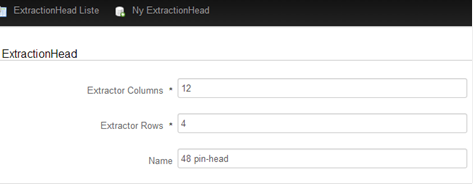
Next, please select Slide Layout > Create Slide Layout from Plate Layout. Here, plates must be selected for the virtual spotting in order to create the slide layout. Please, click the “Hints”-button if in doubt about how to proceed.
Plates are selected from “Available plate layouts” or from “Control plate layouts” and simply dragged to “Plates selected for spotting” in the desired order. NB: Since the actual spotting process is mimicked, it is critical to use the right order in which the plates are processed in the respective spotter/arrayer/printer during array construction! In case a plate e.g. control plate is processed twice, insert the plate layout also twice in this application. If your plate(s) do not appear in the “Available plate layouts”, try to alter the filter setting to fit your project and experiment (red arrow) and then press “Refresh plate layouts” (blue arrow).
After selecting the plates, press continue.
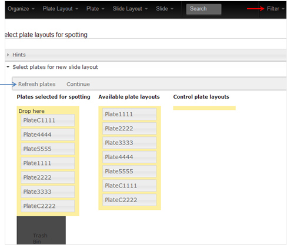
Next, enter the title of your slide, and select properties such as default spot type and lysis buffer for the virtual spotting. Also, the setting for the virtual extractor must be set to match that of the actual extraction head used for spotting. Furthermore, enter information about the block spotting orientation, the number of layout columns and the pattern for depositing samples. NB: Always consider the plate and slide orientation, which is fixed in MIRACLE as shown below. Select the extractor settings and the block orientation accordingly!
Furthermore, in order for the virtual spotting to mimic the actual samples on the slide, in some cases a conversion from an original 96-well plate layout to the 384-well plate layout used in the array is necessary (red circle). In a HTS setting, for example, cells are seeded in 96-well plates and a primary readout is conducted. Subsequently, the treated cells are harvested and the resulting lysates are automatically diluted and transferred into a 384-well plate (the process is schematically depicted in the blue box). This reformatting step can be included in the creation of the slide layout.
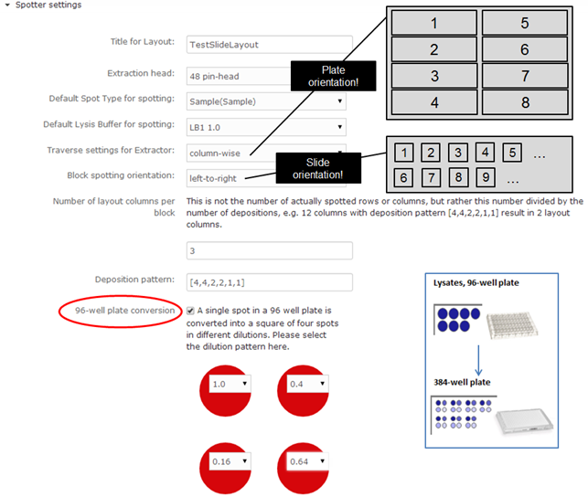
Last, it is possible to exclude certain extractions from an experimental plate, in case not all the wells of a plate contain sample material, which should be spotted.
Columns and rows corresponding to extraction steps can be marked, e.g. extraction 3-8 in the shown example. By pressing “Continue” (red arrow) the marked areas are excluded from the virtual spotting process.
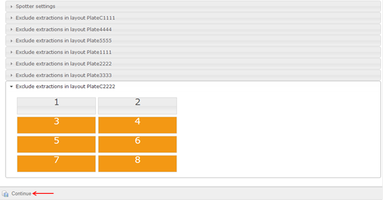
For visual inspection of the final layout, press “Show Layout”. Press “Properties” (A) to show the different properties of the slide layout, including the physical appearance of the layout (number of blocks, row, and columns). The sub-category “History” will display information on who created the layout and when it was created. Below in the next sub-category it is possible to see which slides use the particular layout and which source plates were used to create this layout.
Under “Spot Properties” the user can switch between the different properties, which were already assigned to the experimental plates in section 2.1 and 2.2 (B). It is also possible to switch between the layouts of the different blocks present on the array (C).
Hint: By pointing the mouse over a certain spot (square) on the slide will give you all the information available for this particular sample in a separate pop-up box.
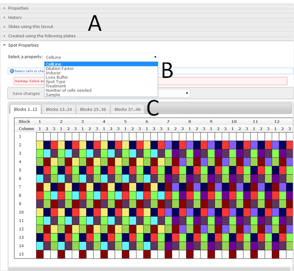
Again it is possible to find the layout through Slide Layout > List Layouts.
2.5. Slide Readouts
Next, results of differentially stained slides (scanner files) must be connected to the corresponding slide layout. First, create the antibodies used for the staining. Slide > Antibodies, please click the top right corner, “New Antibody”. Assign a specific name, used concentration as well as a comment to the antibody, and save your changes by clicking on the bottom left “Create” button. Once created, all used antibodies will be listed under Slide > Antibodies and will be available for further experiments.
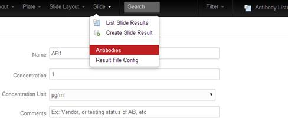
Furthermore, to extract the critical information e.g. the positioning of spots as well as measured signal intensities from a scanner output file, a file configuration needs to be selected, which enables MIRACLE to match the scanner file information to the sample information saved in the slide layout. For this purpose, create a Result File Configuration by clicking Slide > Result File Configuration > NewResultFileConfig. Please give the configuration a name and select the type of grid applied by the scanner software, e.g. in cases signals are order according to their position in blocks of spots enter “Blocks”. Further enter the column numbers/names corresponding to the main columns and rows according to the names used in the header of your scanner file (red box; example txt result file). In case your scanner file contains a header with information about the scanner setting, count the rows of information until you reach your actual result table/list and insert the number in the “skip line” field (see also example txt result file). Save the configuration by clicking the “Create” button at the lower left corner.
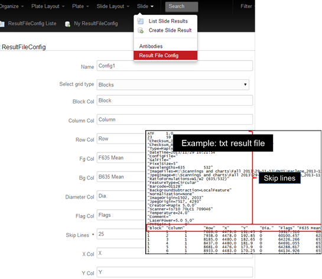
Now, the scanner result files can be connected to the slide layouts. Select Slide > Create Slide Result. Here you may enter information on the slide itself such as a barcode, title, comments to the experiment or the slide, date of staining etc.. Also an antibody must be specified along with scanner properties and slide layout information. Last, a result file bearing the configuration specified in the previous step is to be uploaded (Result File) along with a jpeg or tiff image of the scanned slide (Result Image). It is also possible to link an experimental protocol to the specific slide. Press “Create” in the lower left corner to save your information.

Next, a message box will ask if you would like to add spots to the database, meaning if the signals of each spot should be linked to sample information from the slide layout. Press yes and select the configuration (Config1) for reading the result file. Press “Read the selected sheet”.
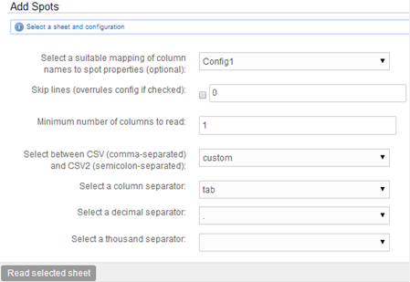
Now the columns of the configuration file must be matched to that of your scanner file. If selected, MIRACLE will try to match the columns of the file with its own database properties. However, since this step is critical, the result should briefly be checked here by the user. NB: Should your configuration file not fit the data uploaded into MIRACLE, you can still match each column manually using the drop down boxes.
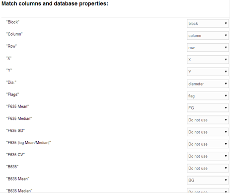
Press the “Create” button in the lower left corner to create the slide. Once created, it is again possible to view the slide either by clicking “Back to Slide” in the top right corner, or in a list by selecting Slide > List Slide Results.
The newly created slide has all property information listed in sub-folders, along with the files applied and which experiments the slide belongs to. The last sub-folder displays other slides with identical layout, which vary with regards to the staining/antibody, e.g. normalizations slides stained with FastGreen or for a housekeeping protein. Last, a Slide Viewer displays the corresponding image file and allows quick navigation to inspect the quality of the staining and spot morphology.
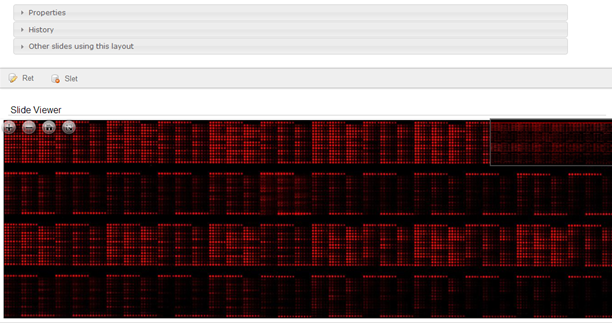
3. Data Handling and Analysis
3.1. Block Shifts and Export of Data
Artificial shifts in the data file may for instance be introduced by the scanner software by inserting a grid shift before signal quantification. It is possible to correct for such shifts on single slides and blocks separately. Select a slide in the slide list (Slide > List Slide Results) and press “Modify Block Shifts” (A). A heatmap will be generated (see next image), displaying the selected property (red arrow). Single blocks can be shifted in either in a horizontal or vertical manner by using the drop-down menu (blue arrow).
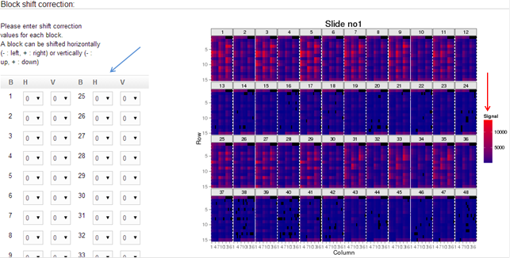
Furthermore, the sample information matched to the signals from the scanner file may be converted to CSV files or exported to R for other analysis not supported by this web-based application (B, C). Select Export CSV (B) to generate for instance a tab separated file. Press “Export and download” (red arrow) for download.
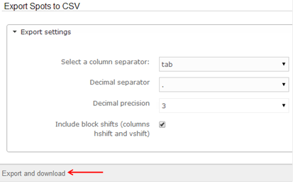
NB: A tab-separated file is the required for Rmiracle in case you wish to upload data for your analysis without using a connected MIRACLE. Please see section 3.3. for details.
3.2. Data Analysis
Once all slides of interest are uploaded, it is possible to click the upper right button, “Data Analysis” (red arrow) in order to access the different tools for analysis (Rmiracle). Here, please again specify, which project and experiments you would wish to include in the analysis. Then select a slide layout, e.g. “Test slide Layout”. By clicking the “Slides” or “Plates” rows, available slides will become visible and can be selected. Selection of multiple slides is feasible. Finally press “Include selected slides and plates in analysis” (blue arrow).
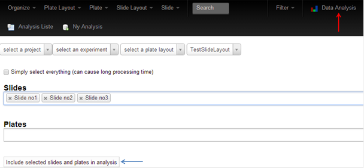
Rmiracle will open, which enables data analysis based on R using information from MIRACLE. The first step is to retrieve the information from MIRACLE, which will take some seconds.
Once loaded, it is possible to choose between different tabs to display heatmaps, protein concentration estimates, comparison of different slide data to each other or to other data, calculation of correlation between data and calculation of significance (red box).
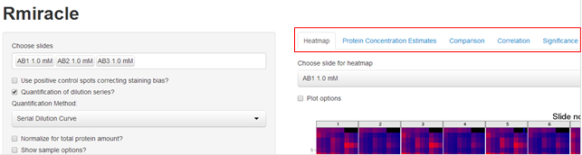
Start by selecting the “Heatmap” pane. Tick the box saying “Plot options” to change the physical properties of the heatmap (e.g. colour, scale) or to change the values (e.g. signal intensity, deposition, sample) displayed in the map.
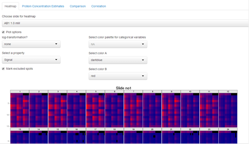
Next, select “Protein Concentration Estimation” (top panel) to analyse your array data. The data are shown for each antibody staining individually. Use the drop-down menu “Choose slide for protein concentration estimate plots” (red arrow) to switch between the different stainings. A bar-chart is generated with the estimated protein concentrations per samples along with an interactive table with estimates including errors. Furthermore, graphics of the signal vs concentration estimates and a curve displaying the serial dilution fit are generated automatically. NB: The latter is only applicable in case lysates from a single sample were spotted in multiple dilutions on the array and the Serial Dilution Curve method was selected for quantification. For more information on selection in quantification, please read further.
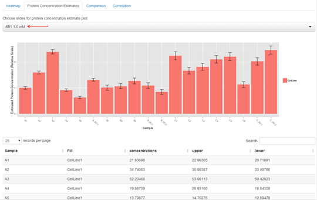
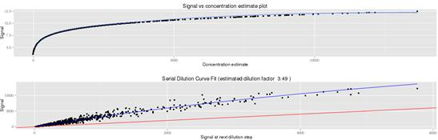
In addition, it is possible to view the protein concentration estimates along with the primary readout. For this, select “Compare to readout data?” (blue arrow). NB: Prior to comparisons with primary readout data, result files need to be implemented as described in section 2.3.
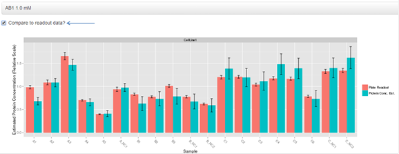
The selection-pane to the left efficiently allows the user to customize the different parameters for analysis, such as switching correction for staining bias on/off and selecting a quantification method (A). NB: The Serial Dilution Curve method is the fastest and most robust method for the data uploaded in this tutorial. Generation of protein concentration estimates using the Tabus or Non-parametric methods demands a little patience and the SuperCurve method does not work with the uploaded test data, possibly due to the small number of dilution steps (4) used in these experiments.
Furthermore, there is the option to normalize your protein values according to total protein amounts by selecting different methods such as housekeeping protein normalization or Median Loading or Variable Slope normalization (B). It is also possible to select only a sub-set of the samples included for analysis and data display, such as here the A-samples, and to select a reference sample (e.g. A-NC1 set to an average of 1 over all displayed 5 property subgroups) (C). In addition, for visualization, the data can be separated into different categories in a horizontal and vertical manner and a category can be selected for the colour fill of the bars (D). In the screenshot displayed below, the data are split based on “Treatment” and “Inducer” and the property “CellLine” (bar fill). NB: Whenever changes are made in category C, you must press the “Update settings” (red arrow) button to execute the changes!
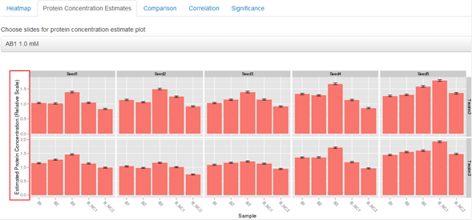
Moreover, it is possible to select if results should be scaled as in the example below, where two different sample treatments provide values in different ranges (E). The example displays samples of the B-set and the scaling is selected for the vertical orientation only.
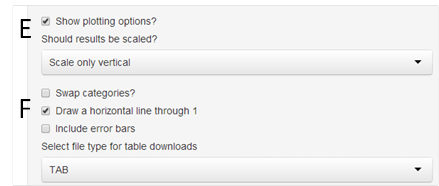
Last, it is possible to swap categories, insert error bars, draw a line through 1, and to select a specific export data format (F) [CSV, CSV2, TAB].
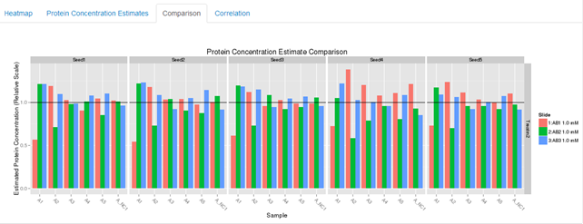
Furthermore, the protein concentration estimates for all three slides of the example data set can be compared. For this purpose select the “Comparison” pane. This feature can be applied on normalized or non-normalized protein estimates. Here it is also possible to compare to the readout data if such is existing. NB: Be aware that the scaling of the protein- vs. readout data may differ so try to normalize to a reference sample.

By selecting the “Correlation” pane it is possible to retrieve calculated Pearson correlation factors between protein concentration estimates from the different antibodies, but also between the different raw signals obtained from each staining. Here, it is also possible to correlate protein values to other primary readouts conducted in the original 96- or 384-well plates, e.g. a cell viability readout or total protein content determination.
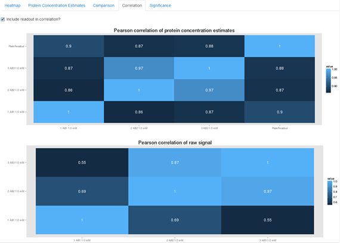
Another feature of Rmiracle is Dunnett’s test for significance of differences in protein concentration estimates, given a number of replicates is available. Select the pane “Significance”. Similar to the protein concentration estimation, it is possible to select different categories for displaying the data. In the example below, data are separated based on “CellLine” and “Inducer”. Most important for this part of the analysis is that a ‘fill’ property is selected that determines which of the samples should be treated as replicates. To this end, the “Replicate” property can be used if set during layout creation. In our example, however, we choose “PlateCol”, e.g. the column of the source plates. This suffices, since all replicates are located in a different column.
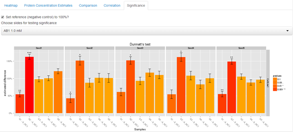
3.3. Uploading files to Rmiracle
As explained in section 3.1., it is also possible to upload data files into Rmiracle without using the MIRACLE web-platform itself. For this, please go to http://www.nanocan.org/miracle/analysis which will take you directly to Rmiracle.
Here files containing layout/sample- and signal information can be selected by using the browse function (red circle). In order to select several slides, e.g. use shift or control.

The file format required is a tab-separated .txt file or .csv file and the layout must contain consecutive columns with information on the following:
hshift, vshift, id, Signal, Block, Row, Column, FG, BG, Flag, Diameter, SampleName, SampleType, TargetGene, SampleGroupA, SGADesc, SampleGroupB, SGBDesc, SampleGroupC, SGCDesc, CellLine, LysisBuffer, DilutionFactor, Inducer, Treatment, SpotType, SpotClass, NumberOfCellsSeeded, Replicate, PlateRow, PlateCol, PlateLayout.
Below is an example of such a file with 11 samples-rows and 32 information-columns (see also Supplemental File 1).

After uploading the files, the analysis can proceed as described in section 3.2.
4. Final Remarks
We intend to continue the development of MIRACLE to make it the state-of-the-art tool for RPPA data processing. Thus, in case you have any more questions and comments on how MIRACLE can be improved, please have a look at the project wiki page https://github.com/NanoCAN/MIRACLE/wiki (31/03/2014). Here, there is also the possibility to use a bug tracker allowing you to report any malfunctions you might have encountered and to request new features (https://github.com/NanoCAN/MIRACLE/issues) (31/03/2014).